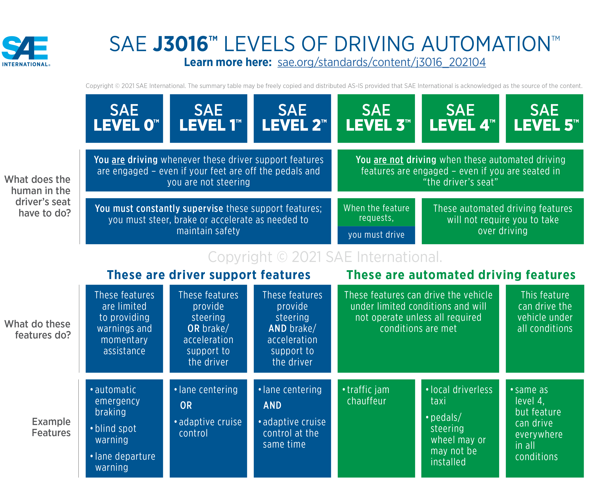
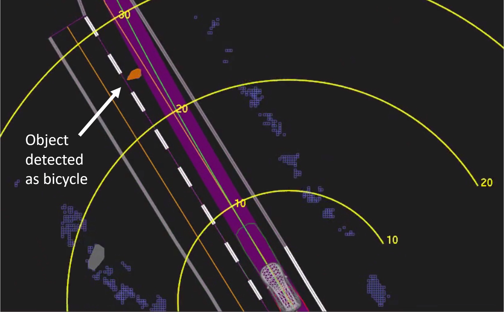
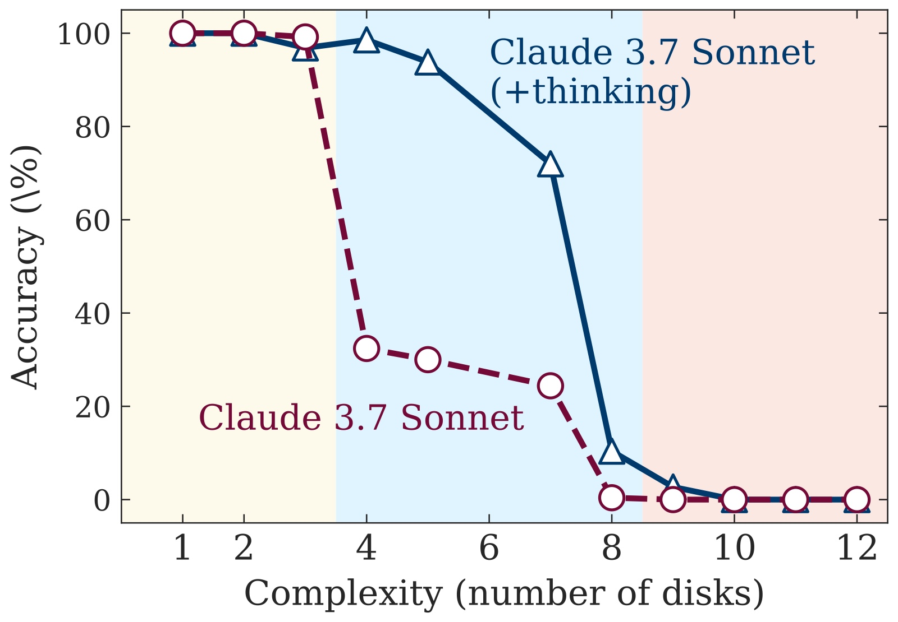
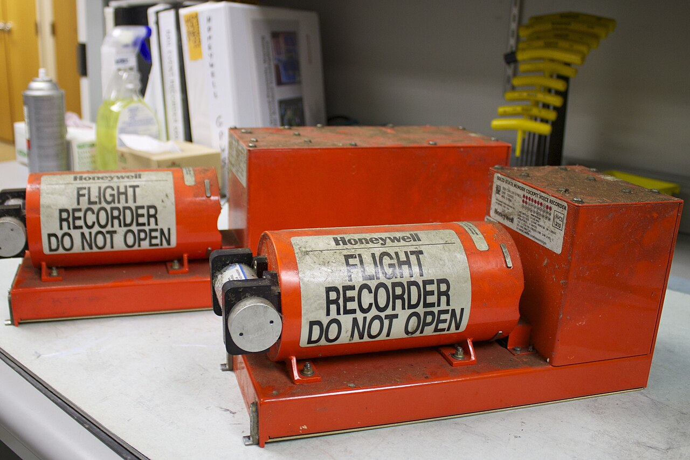
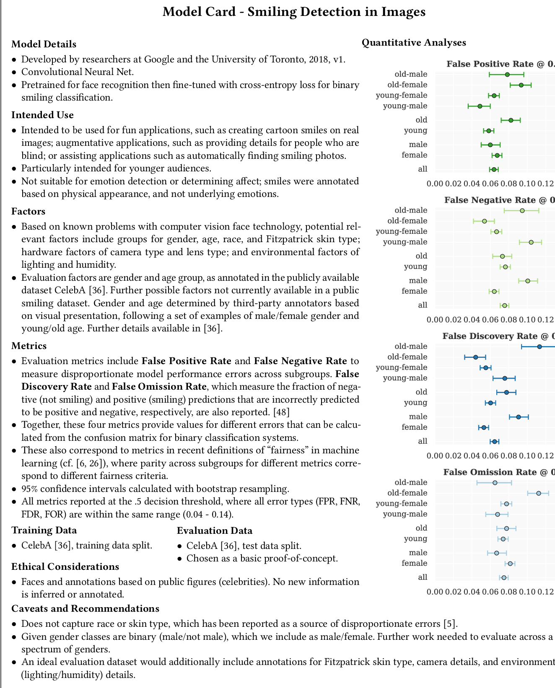
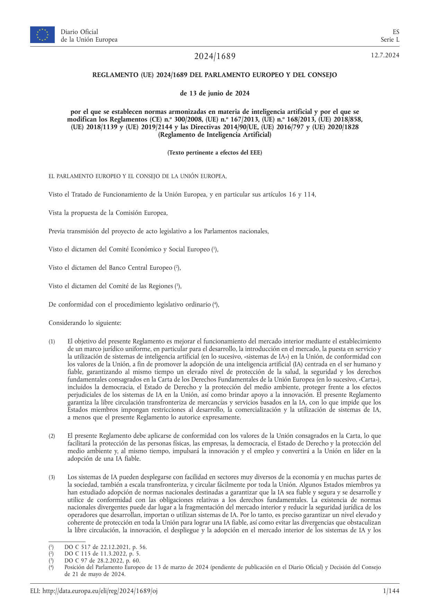
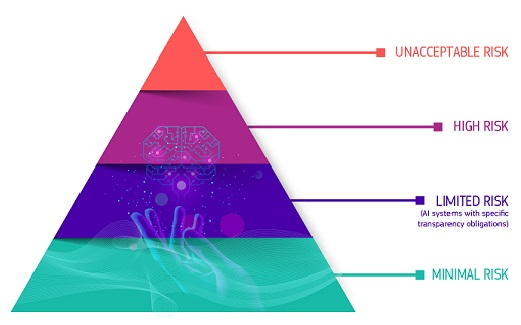
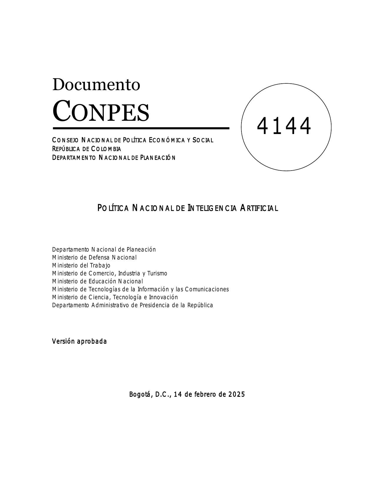

¿Qué quedó registrado para reconstruir lo que pasó?
Rendición de cuentas
¿Quién responde si el sistema se equivoca?
En la Sesión 7 viste que una buena decisión bajo incertidumbre puede salir mal. Hoy la decisión la toma un sistema.
Después de la charla: las sustentaciones, 20 minutos por equipo.
Los sistemas autónomos
Más autonomía, menos aprobaciones
«sistema de IA»: un sistema basado en una máquina que está diseñado para funcionar con distintos niveles de autonomía…Reglamento (UE) 2024/1689, art. 3, punto 1
Detalle ↓: dos escalas conocidas de niveles de automatización.
Detalle · los sistemas autónomos
Dos escalas conocidas de niveles de automatización
Sheridan y Verplank (1978) propusieron 10 niveles para decidir entre una persona y un computador.
En un extremo, la persona hace todo el trabajo. En el otro, el computador decide si lo hace y si le informa a la persona.
SAE J3016 define 6 niveles de conducción automatizada, del 0 al 5. En los niveles 0 a 2, la persona conduce y supervisa.

SAE International (2021), SAE J3016, resumen de los niveles. Se reproduce tal cual, como permite SAE, citando la fuente.
Caso real · el sesgo de automatización
Cuando quien supervisa deja de mirar

NTSB (2018), informe preliminar HWY18MH010, fig. 2: lo que veía el sistema. Detectó a la persona, pero la clasificó como bicicleta. Dominio público.
Tempe, Arizona, 2018. Un vehículo de pruebas de Uber, en modo autónomo, atropelló y mató a una peatona.
Causa probable, según la NTSB: la conductora de seguridad no vigilaba la vía. Miraba su teléfono.
Contribuyó Uber: supervisaba mal a sus conductores y no tenía cómo controlar su complacencia con la automatización.
Es el sesgo de automatización: confiar de más en el sistema y dejar de mirar (Parasuraman y Manzey, 2010).
Verificación
Verificar y validar no son lo mismo
Verificar
¿Construyo bien el producto? ¿Cumple lo que se especificó?
Validar
¿Construyo el producto correcto? ¿Resuelve el problema real?
Las dos preguntas son de Boehm (1979; 1984). Detalle ↓: el límite de las pruebas.
Detalle · verificación
El límite de las pruebas
«Program testing can be used to show the presence of bugs, but never to show their absence!»Dijkstra, E. W. (1970). Notes on Structured Programming (EWD249), p. 7
Las pruebas pueden mostrar que hay errores, pero nunca que no los hay.
Por eso los casos de prueba se complementan con la verificación formal de la Sesión 3. También con la supervisión humana.
Edsger W. Dijkstra. Foto: Hamilton Richards (2002), CC BY-SA 3.0, Wikimedia Commons.
Lo que verificaste en el curso · el contrapunto LLM
El LLM acierta mucho, pero no siempre
Lab
Tarea
Técnica clásica
LLM
Lo que mostró la verificación
2B
Planificar 5 órdenes de trabajo
Fast Downward y el validador: 5 de 5
Planifica solo: 5 de 5. Como traductor: 3 de 4
En la orden sin solución, la traducción agregó un hecho. El validador lo detectó
3B
Auditar una política de compras
Z3: 7 de 7 problemas (6 contradicciones y 1 laguna)
Razona solo: 2 de 7 problemas
Descartó un choque entre dos reglas con un argumento falso
4B
Clasificar 32 cápsulas
CLIP: 15 de 32. La regla del 4A: 8 de 8 deformes
24 de 32 con 448 px, pero solo 1 de 8 deformes
Sus explicaciones de los errores no describían la imagen
5B
Asignar 58 órdenes de trabajo
Transformer con 30 ejemplos por equipo: 48 de 58
58 de 58, sin ejemplos
Aquí ganó el LLM. Solo se supo porque había respuestas correctas para comparar
6A
Reglas para el Titanic
Árbol de profundidad 3: 81.3 %
Reglas escritas sin datos: 76.1 %
Sus reglas cambian en cada corrida: 76.1, 77.5 y 75.8 %
7B
¿Domina el técnico?
BKT: 8 de 10
5 de 10 en dos corridas. Con los parámetros: 8 de 10
Mismas decisiones en las dos corridas, pero con números distintos
Y no avisa cuándo falla. Lo supiste porque tenías con qué comparar.
Corridas del docente con respuestas grabadas de Claude Haiku 5.5, no los resultados de cada pareja. Cifras de ejemplos/contrapunto_del_curso.py. Detalle ↓: de dónde sale cada fila.
Detalle · el contrapunto del curso
De dónde sale cada fila
Lab
Tarea
De dónde sale
2B
Planificar 5 órdenes de trabajo
Sesion 2/labs/laboratorios_docente/README.md · el CSV de referencia, nota de ot512_sin_solucion
3B
Auditar una política de compras
Sesion 3/labs/laboratorios_docente/README.md · tabla de las corridas de la sección 5
4B
Clasificar 32 cápsulas
Sesion 4/labs/laboratorios_docente/README.md · 4B, resultados de referencia
5B
Asignar 58 órdenes de trabajo
Sesion 5/labs/laboratorios_docente/README.md · 5B, el LLM
6A
Reglas para el Titanic
Sesion 6/labs/laboratorios_docente/README.md · 6A, el LLM (corridas con la API)
7B
¿Domina el técnico?
Sesion 7/labs/laboratorios_docente/README.md · 7B, el LLM
Las cuentas salen de los CSV de laboratorios_docente/referencia/ de cada sesión. Todos usan el esquema común que definió la Sesión 2.
La columna «Lo que mostró la verificación» resume el README docente de cada laboratorio.
La lectura de la sesión · Shojaee et al. y Lawsen (2025)
Verificar también cómo se midió

Shojaee et al. (2025), fig. 1: exactitud en la Torre de Hanói según el número de discos. arXiv, CC BY 4.0.
Shojaee et al. (NeurIPS 2025): la exactitud de los modelos de razonamiento colapsa cuando crece la complejidad.
Lawsen: parte del colapso venía de la medición. Algunos cruces del río no tenían solución.
Pero la réplica también tenía errores, como una fórmula equivocada. Lawsen la corrigió en una segunda versión.
Apple respondió en su versión final y dejó fuera esos cruces del río.
Antes de concluir que un sistema falla, o que funciona, verifica cómo se midió.
Trazabilidad
Poder reconstruir qué pasó

NTSB (2013): los registradores del vuelo Asiana 214, en su laboratorio. Dominio público, Wikimedia Commons.
Un avión registra lo necesario para reconstruir un accidente. Un sistema con IA también debería hacerlo.
Qué registrar en un sistema con un LLM
los datos de entrada · el prompt · el modelo y su versión · la respuesta · la verificación · quién aprobó
Ya lo hiciste en el curso. Piensa en el registro de avance del plan.md, las bitácoras CSV y las respuestas grabadas del LLM.
El Reglamento lo exige al alto riesgo: el «registro automático de acontecimientos» (art. 12). Detalle ↓: la documentación.
Detalle · trazabilidad
Documentar el modelo y los datos
Model cards (Mitchell et al., 2019): un documento corto que acompaña a un modelo. Dice para qué sirve, cómo se evaluó y en qué grupos falla más.
Datasheets (Gebru et al., 2021): lo mismo para un dataset. Dice por qué se creó, qué contiene, cómo se recogió y para qué se recomienda.
El Reglamento pide algo parecido al alto riesgo: la documentación técnica (art. 11 y anexo IV).

Mitchell et al. (2019), fig. 2: model card de un detector de sonrisas. Extracción de Semantic Scholar; el borde derecho de los gráficos se corta. Cita con fines educativos.
Rendición de cuentas · caso real
La organización responde por su chatbot
El chatbot de Air Canada le dio a un cliente información equivocada sobre una tarifa por duelo.
La aerolínea alegó que no respondía por lo que dijera su chatbot. El tribunal lo resumió así: como si fuera una entidad separada.
Decisión (2024): la aerolínea responde por toda la información de su sitio web. Da igual si viene de un chatbot.
Pagó 812.02 dólares canadienses. Poco dinero, pero una regla clara.
Delegar en un sistema no delega la responsabilidad.
Moffatt v. Air Canada, 2024 BCCRT 149, párr. 27 y 44. Foto: Steve Knight (2023), recortada, CC BY 2.0, Wikimedia Commons.
Rendición de cuentas · un caso colombiano
Un juez usó ChatGPT, y la Corte fijó reglas
Cartagena, 2023: un juez resolvía una tutela por la salud de un niño. Usó ChatGPT para ampliar los argumentos de su fallo.
Corte Constitucional (T-323 de 2024): no reemplazó al juez, porque lo usó después de tomar la decisión.
Pero no cumplió la transparencia ni la responsabilidad. La Corte fijó 12 principios, como el control humano y la verificación.
La Judicatura expidió después lineamientos para usar IA generativa en la Rama Judicial (Acuerdo PCSJA24-12243).
Palacio de Justicia, Bogotá. Foto: Bernard Gagnon (2020), CC BY-SA 4.0, Wikimedia Commons.
Rendición de cuentas · la supervisión humana
Supervisar exige entender
Quienes supervisan deben poder «ser conscientes de la posible tendencia a confiar automáticamente o en exceso en los resultados de salida […] («sesgo de automatización»)».Reglamento (UE) 2024/1689, art. 14, apartado 4, letra b). El mismo apartado pide poder no usar el sistema, y detenerlo.
MYCIN · S1
Explica qué reglas usó para su conclusión.
Un árbol · S6
Sus reglas se leen, hoja por hoja.
Una red bayesiana · S7
Su dibujo y sus tablas se auditan.
Un LLM · S3
Su traza no es siempre una explicación fiel (Turpin et al., 2023).
Marco regulatorio · Reglamento (UE) 2024/1689
Más riesgo, más obligaciones

Diario Oficial de la UE, L, 12.7.2024. Reutilización autorizada citando la fuente (Decisión 2011/833/UE).
La pirámide es de la Comisión Europea, no del texto legal. Los modelos de IA de uso general tienen su propio capítulo (cap. V). Detalle ↓: las prácticas prohibidas y las áreas del anexo III.
Detalle · Reglamento (UE) 2024/1689
Las prácticas prohibidas y las áreas de alto riesgo
Prácticas prohibidas (art. 5, apartado 1):
a) manipulación subliminal o engañosa que cause perjuicios; b) explotar la vulnerabilidad por edad, discapacidad o situación social;
c) la puntuación ciudadana; d) predecir delitos solo por el perfil de una persona;
e) crear bases de reconocimiento facial con imágenes extraídas de internet o de cámaras;
f) inferir emociones en el trabajo y en los centros educativos, salvo por motivos médicos o de seguridad;
g) categorización biométrica para inferir la raza o las opiniones políticas;
h) identificación biométrica remota en tiempo real con fines policiales, con excepciones;
b bis) y b ter), del Ómnibus de 2026: imágenes íntimas sin consentimiento y material de abuso sexual infantil. Desde el 2 de diciembre de 2026.
Áreas del anexo III:
biometría
infraestructuras críticas
educación y formación profesional
empleo y gestión de los trabajadores
servicios esenciales
cumplimiento del Derecho
migración y fronteras
justicia y procesos democráticos

Comisión Europea, «AI Act», pirámide de riesgos. CC BY 4.0.
Marco regulatorio · el alto riesgo
Lo que exige, con los tres temas de hoy
En MantenIA: el tutor de la Sesión 7 decide qué técnico queda certificado. El anexo III nombra los sistemas para «evaluar los resultados del aprendizaje» (punto 3, letra b).
Títulos oficiales completos en la vertical. Detalle ↓: artículo por artículo.
Detalle · el alto riesgo, artículo por artículo
Títulos oficiales y lo que más importa de cada uno
Artículo
Título oficial
Lo que más importa
9
Sistema de gestión de riesgos
Identificar y reducir los riesgos durante todo el ciclo de vida
10
Datos y gobernanza de datos
Datos de entrenamiento, validación y prueba de calidad
11
Documentación técnica
Su contenido está en el anexo IV
12
Conservación de registros
«registro automático de acontecimientos» durante todo el ciclo de vida
13
Transparencia y comunicación de información a los responsables del despliegue
Instrucciones de uso claras
14
Supervisión humana
Entender, no usar, invalidar o detener el sistema; conocer el sesgo de automatización
15
Precisión, solidez y ciberseguridad
Un nivel adecuado durante todo el ciclo de vida
26
Obligaciones de los responsables del despliegue de sistemas de IA de alto riesgo
Supervisión con «competencia, formación y autoridad»; guardar los registros al menos seis meses
También: art. 73, notificación de incidentes graves; art. 86, derecho a explicación de decisiones tomadas individualmente.
Marco regulatorio · el calendario y el alcance
¿Desde cuándo, y por qué importa en Colombia?
El Ómnibus digital sobre IA, Reglamento (UE) 2026/1744, aplazó el alto riesgo. Está en vigor desde el 27 de julio de 2026.
Alcance (art. 2): también obliga a empresas de fuera de la Unión, si los resultados se usan allí.
Multas (art. 99): hasta 35 millones de euros o el 7 % de la facturación mundial, por una práctica prohibida.
Las reglas de la UE tienden a volverse el estándar mundial: el «efecto Bruselas» (Bradford, 2020).
Verificado el 14 de noviembre de 2026 en el texto consolidado (27.7.2026) y en la página de la Comisión. Detalle ↓: el calendario completo.
Detalle · el calendario
El calendario completo, con el Ómnibus de 2026
12.7.2024: publicación en el Diario Oficial. 1.8.2024: entrada en vigor.
2.2.2025: capítulos I y II, con las prácticas prohibidas y la alfabetización (art. 4).
2.8.2025: modelos de IA de uso general (cap. V), gobernanza y sanciones.
2.8.2026: aplicación general, con la transparencia (art. 50).
2.12.2026: las dos prohibiciones nuevas del Ómnibus.
2.12.2027: alto riesgo del anexo III. 2.8.2028: alto riesgo del anexo I.
2.8.2030: plazo para los sistemas de alto riesgo de las autoridades públicas (art. 111).
El Ómnibus digital sobre IA, Reglamento (UE) 2026/1744:
19.11.2025: propuesta de la Comisión, COM(2025) 836.
La propuesta ataba el alto riesgo a la existencia de normas técnicas. El texto final fijó fechas.
El art. 4 cambió: ahora pide «medidas para apoyar» la alfabetización en materia de IA, sin exigir un nivel específico.
Marco regulatorio · Colombia
Colombia: una política, no una ley

DNP (2025), Documento CONPES 4144, portada. Cita con fines educativos.
Reglamento (UE) 2024/1689
CONPES 4144
Qué es
Una norma obligatoria
Un documento de política
A quién
Proveedores y responsables del despliegue
Entidades del Gobierno, con 106 acciones
Enfoque
Niveles de riesgo
Seis ejes, de la ética al uso de la IA
Sanciones
Hasta 35 millones de euros o el 7 %
No tiene
Fechas
2024, por etapas hasta 2028
14 de febrero de 2025, hasta 2030
Lo que ya obliga: la Ley 1581 de 2012, de datos personales. Y la Circular Externa 002 de 2024 de la SIC, sobre IA.
Colombia no tiene ley de IA. El proyecto del Gobierno de 2025 se archivó. Otro, con riesgos como el europeo, está en trámite.
Estado de los proyectos verificado el 14 de noviembre de 2026 en la Cámara de Representantes. Detalle ↓: el CONPES 4144 en cifras, y otros marcos.
Detalle · Colombia
El CONPES 4144 en cifras
Eje estratégico
Millones de pesos
Parte
1. Ética y gobernanza
634
0.1 %
2. Datos e infraestructura
284 148
59.3 %
3. Investigación, desarrollo e innovación
11 160
2.3 %
4. Desarrollo de capacidades y talento digital
18 522
3.9 %
5. Mitigación de riesgos
7 759
1.6 %
6. Uso y adopción de la IA
157 050
32.8 %
Total, del Presupuesto General de la Nación
479 273
100 %
Aprobado: 14 de febrero de 2025. Horizonte: 2025 a 2030, con 106 acciones.
Ética: un modelo de gobernanza, un Consejo Asesor de Expertos y una guía para el sector privado.
Antecedentes: el CONPES 3975 de 2019 y el Marco Ético para la IA de 2021, que no es vinculante.
DNP (2025), CONPES 4144, resumen ejecutivo y tabla 5. Porcentajes calculados con esa tabla.
Detalle · otros marcos
Otros marcos de IA responsable, todos voluntarios
OCDE, Principios de IA (2019, actualizados en 2024). Su principio de rendición de cuentas pide trazabilidad de los datos, los procesos y las decisiones.
UNESCO, Recomendación sobre la Ética de la IA (noviembre de 2021), para sus 194 Estados miembros.
NIST, AI Risk Management Framework 1.0 (enero de 2023), de uso voluntario. Tiene cuatro funciones: gobernar, mapear, medir y gestionar.
ISO/IEC 42001:2023, los requisitos de un sistema de gestión de la IA en una organización.
Para tu sustentación
Las preguntas de responsabilidad
Autonomía
¿Qué decide solo el sistema, y qué aprueba una persona?
Verificación
¿Cómo se verifica lo que propone el LLM?
Trazabilidad
¿Qué queda registrado, y quién lo puede revisar?
Rendición de cuentas
¿Quién responde si el sistema se equivoca?
Regulación
¿Qué nivel de riesgo tendría en el Reglamento europeo?
Datos
¿Usa datos personales? (Ley 1581 de 2012)
No necesitas ser abogado. Necesitas conocer tu sistema y decir con honestidad lo que no resuelve.
Cierre del curso
El mapa del curso
Cierre del curso
Lo que sigue
Ahora: las sustentaciones
20 minutos por equipo: 12 para presentar y demostrar, y 8 para preguntas. El orden se sortea.
Shojaee, P. et al. (2025). The illusion of thinking. NeurIPS 2025. arXiv · Lawsen, A. (2025). Comment on The Illusion of Thinking. arXiv · When your joke paper goes viral
Kambhampati, S. et al. (2026). Position: stop anthropomorphizing intermediate tokens as reasoning/thinking traces! ICML 2026. arXiv
Boehm, B. W. (1984). Verifying and validating software requirements and design specifications. IEEE Software 1(1). Versión de 1979 · Dijkstra, E. W. (1970). EWD249
Sheridan, T. B. y Verplank, W. L. (1978). Human and Computer Control of Undersea Teleoperators. MIT. PDF (Wayback) · Parasuraman, R. y Manzey, D. H. (2010). Human Factors 52(3). PubMed
Mitchell, M. et al. (2019). Model cards for model reporting. arXiv · Gebru, T. et al. (2021). Datasheets for datasets. CACM 64(12). arXiv · Raji, I. D. et al. (2020). Closing the AI accountability gap. arXiv
Turpin, M. et al. (2023). Language models don't always say what they think. NeurIPS 2023. arXiv · Bradford, A. (2020). The Brussels Effect. Oxford University Press. OUP (Wayback)
Dignum, V. (2019). Responsible Artificial Intelligence. Springer. DOI · Aler Tubella, A., Dignum, V. et al. (2026). Trustworthy AI: Ethical Frameworks for Responsible Innovation. Cambridge University Press. DOI
Russell, S. y Norvig, P. (2021). AIMA, 4.ª ed., cap. 27, «Philosophy, Ethics, and Safety of AI». Contenido · Poole, D. L. y Mackworth, A. K. (2023), cap. 18, «The Social Impact of Artificial Intelligence». artint.info